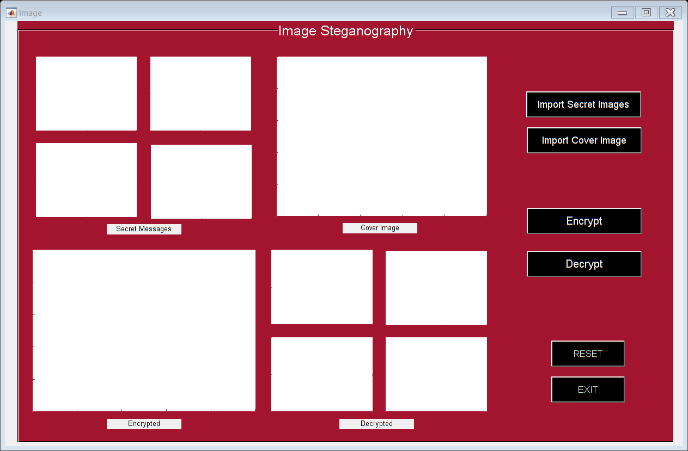

function varargout = Image(varargin)
gui_Singleton = 1;
gui_State = struct('gui_Name', mfilename, ...
'gui_Singleton', gui_Singleton, ...
'gui_OpeningFcn', @Image_OpeningFcn, ...
'gui_OutputFcn', @Image_OutputFcn, ...
'gui_LayoutFcn', [] , ...
'gui_Callback', []);
if nargin && ischar(varargin{1})
gui_State.gui_Callback = str2func(varargin{1});
end
if nargout
[varargout{1:nargout}] = gui_mainfcn(gui_State, varargin{:});
else
gui_mainfcn(gui_State, varargin{:});
end
function Image_OpeningFcn(hObject, eventdata, handles, varargin)
handles.output = hObject;
guidata(hObject, handles);
global msg1
global msg2
global msg3
global msg4
global cvr
function varargout = Image_OutputFcn(hObject, eventdata, handles)
varargout{1} = handles.output;
function ImportSecret_Callback(hObject, eventdata, handles)
global msg1
global msg2
global msg3
global msg4
msg1 = imread('message1.bmp');
axes(handles.axes3);
imshow(msg1);
msg1 = rgb2gray(msg1);
msg1 = imresize(msg1, [512 512]);
msg2 = imread('message2.bmp');
axes(handles.axes8);
imshow(msg2);
msg2 = rgb2gray(msg2);
msg2 = imresize(msg2, [512 512]);
msg3 = imread('message3.bmp');
axes(handles.axes7);
imshow(msg3);
msg3 = rgb2gray(msg3);
msg3 = imresize(msg3, [512 512]);
msg4 = imread('message4.bmp');
axes(handles.axes9);
imshow(msg4);
msg4 = rgb2gray(msg4);
msg4 = imresize(msg4, [512 512]);
function ImportCover_Callback(hObject, eventdata, handles)
global cvr
cvr = imread('cover.bmp');
cvr = rgb2gray(cvr);
cvr = imresize(cvr, [1024 1024]);
cvr = imnoise(cvr,'gaussian');
axes(handles.axes2);
imshow(cvr);
function Encrypt_Callback(hObject, eventdata, handles)
global msg1
global msg2
global msg3
global msg4
global cvr
cvr = imnoise(cvr,'gaussian');
msg = [msg1 msg2; msg3 msg4];
m1 = size(cvr,1);
n1 = size(cvr,2);
m2 = size(msg,1);
n2 = size(msg,2);
steg1 = msg;
for i = 1:m2
for j = 1:n2
msg_b7(i,j) = bitand(steg1(i,j),128);
msg_b6(i,j) = bitand(steg1(i,j),64);
msg_b5(i,j) = bitand(steg1(i,j),32);
msg_b4(i,j) = bitand(steg1(i,j),16);
end
end
steg2 = cvr;
for i = 1:m2
for j = 1:n2
cvr_b7(i,j) = bitand(steg2(i,j),128);
cvr_b6(i,j) = bitand(steg2(i,j),64);
cvr_b5(i,j) = bitand(steg2(i,j),32);
cvr_b4(i,j) = bitand(steg2(i,j),16);
cvr_b3(i,j) = bitand(steg2(i,j),8);
cvr_b2(i,j) = bitand(steg2(i,j),4);
cvr_b1(i,j) = bitand(steg2(i,j),2);
cvr_b0(i,j) = bitand(steg2(i,j),1);
end
end
steg = zeros(size(cvr));
steg = bitset(steg,8,cvr_b7);
steg = bitset(steg,7,cvr_b6);
steg = bitset(steg,6,cvr_b5);
steg = bitset(steg,5,cvr_b4);
steg = bitset(steg,4,msg_b7);
steg = bitset(steg,3,msg_b6);
steg = bitset(steg,2,msg_b5);
steg = bitset(steg,1,msg_b4);
steg = uint8(steg);
axes(handles.axes14);
imshow(steg);
imwrite(steg,'steganographic.bmp');
function Decrypt_Callback(hObject, eventdata, handles)
img = imread('steganographic.bmp');
[m,n]=size(img);
for i=1:m
for j=1:n
img_b7(i,j)=bitand(img(i,j),128);
img_b6(i,j)=bitand(img(i,j),64);
img_b5(i,j)=bitand(img(i,j),32);
img_b4(i,j)=bitand(img(i,j),16);
img_b3(i,j)=bitand(img(i,j),8);
img_b2(i,j)=bitand(img(i,j),4);
img_b1(i,j)=bitand(img(i,j),2);
img_b0(i,j)=bitand(img(i,j),1);
end
end
message = img_b0*16 + img_b1*32 + img_b2*64 + img_b3*128;
m1 = message(1:512,1:512);
axes(handles.axes12);
imshow(m1);
imwrite(m1,'retrieved_image_1.bmp');
m2 = message(1:512,512:end);
axes(handles.axes10);
imshow(m2);
imwrite(m2,'retrieved_image_2.bmp');
m3 = message(512:end,1:512);
axes(handles.axes13);
imshow(m3);
imwrite(m3,'retrieved_image_3.bmp');
m4 = message(512:end,512:end);
axes(handles.axes11);
imshow(m4);
imwrite(m4,'retrieved_image_4.bmp');
function RESET_Callback(hObject, eventdata, handles)
axes(handles.axes10);
cla();
axes(handles.axes11);
cla();
axes(handles.axes12);
cla();
axes(handles.axes13);
cla();
axes(handles.axes14);
cla();
axes(handles.axes2);
cla();
axes(handles.axes3);
cla();
axes(handles.axes7);
cla();
axes(handles.axes8);
cla();
axes(handles.axes9);
cla();
function EXIT_Callback(hObject, eventdata, handles)
close
